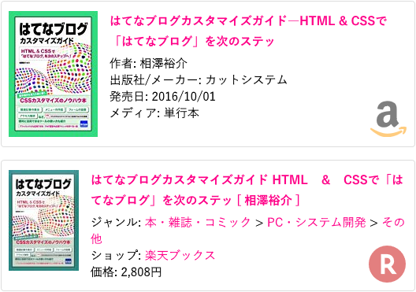
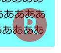
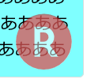

はてなブログの Amazon と楽天の商品リンクにアイコンを付けた 第2弾
はてなブログの Amazon 商品リンク枠と、楽天商品リンク枠に、それぞれのサービスのロゴを表示させるカスタマイズ、第2弾。
目次
経緯
以前、こんな記事を書いた。
はてなブログにおける、Amazon や楽天の商品リンクの右下にそれぞれのサービスのロゴを配置しよう、というもの。このカスタマイズを行うと、デフォルトでは「Amazon 商品リンク」なのか「楽天商品リンク」なのかの区別が付きづらいところ、一目で区別が付くようになる。

↑コレが以前の記事で紹介したアイコンのサンプル。
この時のサンプルは背景画像に Data URL を埋め込んでおり、「CSS のみで実装」とは書いていたが、実質的には画像を組み合わせて作っていた。
発展版を作成した
今回作った発展版は、はてなブログにデフォルトで組み込まれている blog.css の中に含まれる「BlogIcon」フォントを利用している。よって、新たに画像を用意することなく実装しており、コード量も減らせている。
動作サンプル
実はもうこのブログには発展版を適用してある。商品リンクが以下のキャプチャのように表示されているはずだ。以前のサンプルと見た目はほぼ変わらない。

以下の CodePen に、旧サンプルとの比較ができるモノを作った。コチラもご覧いただきたい。
CSS コードを公開
コードは CodePen に載せているモノのとおり。繰り返しになるが、このコードを動作させるには、はてなブログが提供する blog.css を読み込んでいることが前提となる。
/* Amazon・楽天 共通 : 基準設定 */
.hatena-asin-detail {
position: relative;
border-radius: 4px;
}
/* Amazon・楽天 共通 : 右下に余白を開けコンテンツを配置する準備をしておく */
.hatena-asin-detail::before {
position: absolute;
right: .6rem;
bottom: .6rem;
font-size: 55px;
font-family: blogicon; /* blog.css で読み込まれる blogicon フォントを利用する */
line-height: 1;
}
/* Amazon : 円形グラデーションで色を分けマスクすることで「a」部分を黒色・矢印を黄色にする */
.hatena-asin-detail:not(.hatena-rakuten-detail)::before {
content: "\f034"; /* Amazon アイコン */
color: transparent;
background: radial-gradient(ellipse farthest-corner at 50% 20px, rgba(0, 0, 0, .5) 50%, rgba(255, 153, 0, .5) 50%) 50% 50% / 60px 50px no-repeat;
background-clip: text;
-webkit-background-clip: text;
}
/* 楽天 : アイコンに合わせて白い円を作り、透過されている「R」部分を白色にする */
.hatena-asin-detail.hatena-rakuten-detail::before {
content: "\f722"; /* 楽天アイコン */
border-radius: 50%;
width: 48px;
height: 47px;
line-height: 42px;
color: rgba(200, 0, 0, .5);
background: rgba(255, 255, 255, .5);
}
/* ==============================
* Amazon : IE11 用 Polyfill
* ============================== */
/* IE11 だと background-clip が効かないため、黄色ベースでアイコンを置いておく・この上に黒色の「a」部分を半透明で重ねる */
_:-ms-lang(x)::-ms-backdrop, .hatena-asin-detail:not(.hatena-rakuten-detail)::before {
color: rgba(255, 153, 0, .5);
background: none;
}
/* .hatena-asin-detail-foot は空の要素・黒色の「a」部分をクロップするため幅・高さを指定して配置する */
_:-ms-lang(x)::-ms-backdrop, .hatena-asin-detail:not(.hatena-rakuten-detail) .hatena-asin-detail-foot {
position: absolute;
right: calc(9px + .6rem);
bottom: calc(15px + .6rem);
width: 32px;
height: 40px;
line-height: 1;
overflow: hidden;
}
/* .hatena-asin-detail-foot の疑似要素でアイコンを配置し、「a」部分の左側の余白を削る */
_:-ms-lang(x)::-ms-backdrop, .hatena-asin-detail:not(.hatena-rakuten-detail) .hatena-asin-detail-foot::before {
content: "\f034"; /* Amazon アイコン */
position: absolute;
left: -5px;
color: rgba(0, 0, 0, .6);
font-size: 55px;
font-family: blogicon;
}
IE11 向けの Polyfill が3ブロックほど最後にまとまっているが、IE11 を無視して良ければ実にシンプル。
実装詳細
以下、実装の詳細を紹介する。
Amazon アイコンの作り方
Amazon のアイコンは、BlogIcon フォントで \f034 文字を指定すると表示できる。Unicode の U+E000 から U+F8FF は私用領域、つまり「好きに使ってね」という領域で開けられており、その中の文字に Amazon アイコンが当てられている。
通常どおりアイコンとして利用する場合は、以下のように使う。
<i class="blogicon-amazon"></i>
コレで、次のように表示される → __(サンプルのため文字サイズを大きくした)
この文字を擬似要素で配置しているワケだが、問題は文字色。Amazon のロゴアイコンは、「a」部分が黒色、下の矢印部分が黄色 (#ff9900) である。
単純に color で文字色を指定してしまうと、「a」部分も「矢印」部分も同色になってしまうため、どうにかして「矢印部分だけ黄色」にしたかった。
最初は「::before 疑似要素と ::after 疑似要素を組み合わせて1つのロゴを作ろうか…」と試行錯誤していたが、overflow: hidden によるクロップが限界で断念。そして辿り着いたのは、-webkit-background-clip: text を使い、背景指定を文字列でマスク表示させる方法だった。radial-gradient で円形のグラデーションを作り、「a」部分だけを丸く囲んで黒色を当て、グラデーションする範囲を作らずすぐに外周に黄色を当てるようにした。
↑ -webkit-background-clip: text 指定を外すと、こんな風に見える。
こうして1文字に2色の文字色を付けられた。
IE11 は background-clip: text が効かない
せっかく頑張って作ったのだが、IE11 は background-clip: text に対応しておらず、マスク化ができなかった。
そこで、当初考えていた ::before 疑似要素と ::after 疑似要素を組み合わせる方法に戻り、なんとかならないか挑戦してみたのだが、IE11 は overflow: hidden を指定して border-radius で要素を丸めた時、はみ出た部分にも文字がはみ出て表示されてしまい、うまくクロップできなかった。
試行錯誤したが、IE11 の場合は残念ながら、苦肉の策で半透明の黄色ベースでアイコン全体を配置し、その上に「a」部分のみを上手くクロップした要素を重ねることにした。そのため、IE11 で見た時だけ「a」部分が若干黄ばんでいる…。
IE11 のみ CSS を適用する CSS ハックは以下で紹介したモノを使用した。
楽天アイコンの作り方
楽天アイコンの場合は Amazon アイコンよりは簡単だったが、一つ拘ったところがある。
まずは通常のアイコンを表示させてみる。文字コードとしては \f722 で表示できる。
<i class="blogicon-rakuten"></i>
コレで、次のように表示される → __(サンプルのため文字サイズを大きくした)
楽天アイコンの場合、丸い囲み部分に色が付いており、中央の「R」部分は透過されている。円の部分に色を付けるのは color プロパティで良いのだが、このままだと「R」部分は透明なので、このアイコン部分に文字が重なった時に、重なった文字が薄く表示されないのである。また、商品リンク枠全体に白以外の背景色が付いた時も、不格好なのである。

↑「R」部分の後ろに見える「あ」の文字が通常の濃さで見えている上に、背景色が白色以外だと「R」字がその色になってしまう。
そこで、border-radius: 50% で円を作り、白色の背景色を付けることで、白い円の土台に丸文字を重ねた状態を作った。

完璧には縁取り出来ていないので、若干ハミ出す感もあるが、ご愛嬌…。基本は白背景で使ってもらう想定なので…。
コレで、「R」字部分に重なる文字があっても、半透明で表示されることになる。
コードの縮減率は…？
さて、今回のサンプルでどのくらいコード量が減らせたか、圧縮したコード同士で比較してみよう。
/* 前回の旧サンプル : 1957文字 */
.hatena-asin-detail{border-radius:4px;background:linear-gradient(to right,rgba(255,255,255,.2),rgba(255,255,255,.2)),url("") no-repeat right 10px bottom 10px/48px 48px}.hatena-asin-detail.hatena-rakuten-detail{background:linear-gradient(to right,rgba(255,255,255,.5),rgba(255, 255,255,.5)),url("") no-repeat right 10px bottom 10px/48px 48px}
/* 今回の新サンプル : 1186文字 */
.hatena-asin-detail{position:relative;border-radius:4px}.hatena-asin-detail::before{position:absolute;right:.6rem;bottom:.6rem;font-size:55px;font-family:blogicon;line-height:1}.hatena-asin-detail:not(.hatena-rakuten-detail)::before{content:"\f034";color:transparent;background:radial-gradient(ellipse farthest-corner at 50% 20px,rgba(0,0,0,.5) 50%,rgba(255,153,0,.5) 50%) 50% 50% / 60px 50px no-repeat;background-clip:text;-webkit-background-clip:text}_:-ms-lang(x)::-ms-backdrop,.hatena-asin-detail:not(.hatena-rakuten-detail)::before{color:rgba(255,153,0,.5);background:0}_:-ms-lang(x)::-ms-backdrop,.hatena-asin-detail:not(.hatena-rakuten-detail) .hatena-asin-detail-foot{position:absolute;right:calc(9px + .6rem);bottom:calc(15px + .6rem);width:32px;height:40px;line-height:1;overflow:hidden}_:-ms-lang(x)::-ms-backdrop,.hatena-asin-detail:not(.hatena-rakuten-detail) .hatena-asin-detail-foot::before{content:"\f034";position:absolute;left:-5px;color:rgba(0,0,0,.6);font-size:55px;font-family:blogicon}.hatena-asin-detail.hatena-rakuten-detail::before{content:"\f722";border-radius:50%;width:48px;height:47px;line-height:42px;color:rgba(200,0,0,.5);background:rgba(255,255,255,.5)}
/* 今回の新サンプル … IE11 で Amazon を「黄色一色」にしたら : 754文字 */
.hatena-asin-detail{position:relative;border-radius:4px}.hatena-asin-detail::before{position:absolute;right:.6rem;bottom:.6rem;font-size:55px;font-family:blogicon;line-height:1}.hatena-asin-detail:not(.hatena-rakuten-detail)::before{content:"\f034";color:transparent;background:radial-gradient(ellipse farthest-corner at 50% 20px,rgba(0,0,0,.5) 50%,rgba(255,153,0,.5) 50%) 50% 50% / 60px 50px no-repeat;background-clip:text;-webkit-background-clip:text}_:-ms-lang(x)::-ms-backdrop,.hatena-asin-detail:not(.hatena-rakuten-detail)::before{color:rgba(255,153,0,.5);background:0}.hatena-asin-detail.hatena-rakuten-detail::before{content:"\f722";border-radius:50%;width:48px;height:47px;line-height:42px;color:rgba(200,0,0,.5);background:rgba(255,255,255,.5)}
旧サンプルは Data URL 文字列がかさんで1957文字。それに対し、今回の新サンプルでは1186文字と、771文字 (バイト) 削減できた。さらに、IE11 で Amazon ロゴの2色表示を諦め、「黄色一色」にしてみたとしたら、.hatena-asin-detail-foot 要素への指定が削れるので754文字になる。これなら1203文字、約 1.2kb も削減できており、CSS のサイズ縮小に貢献できたであろう。